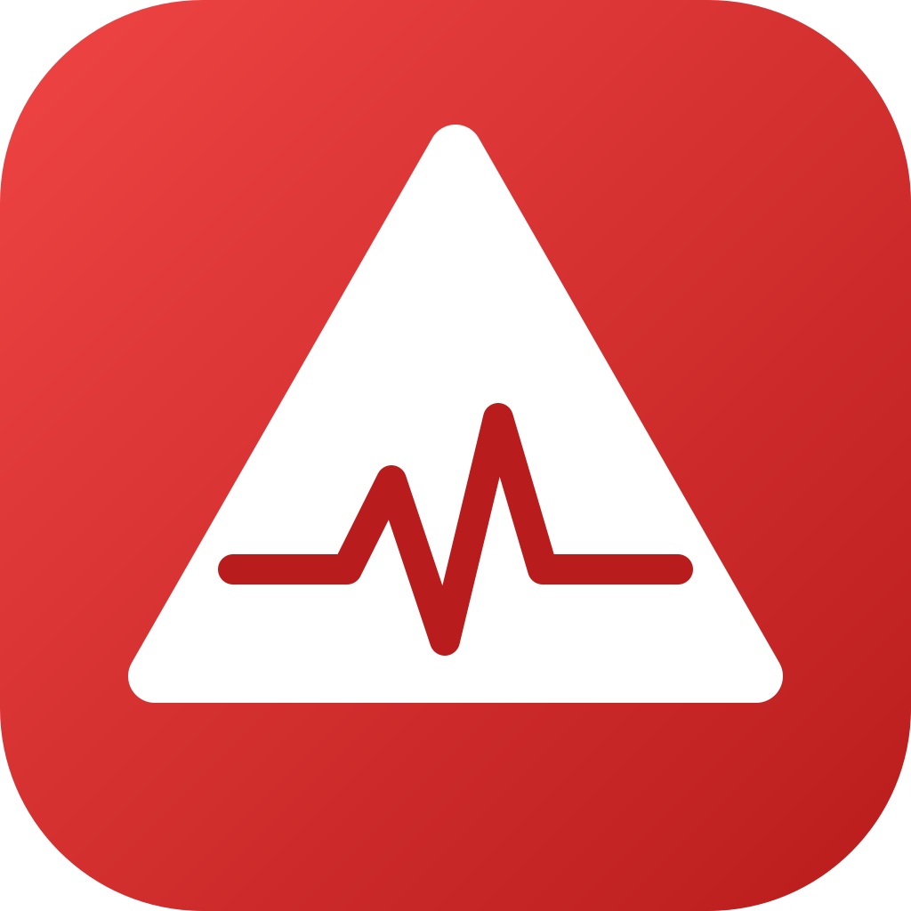
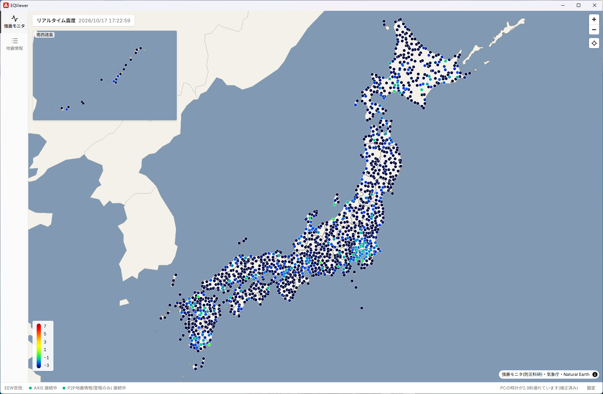
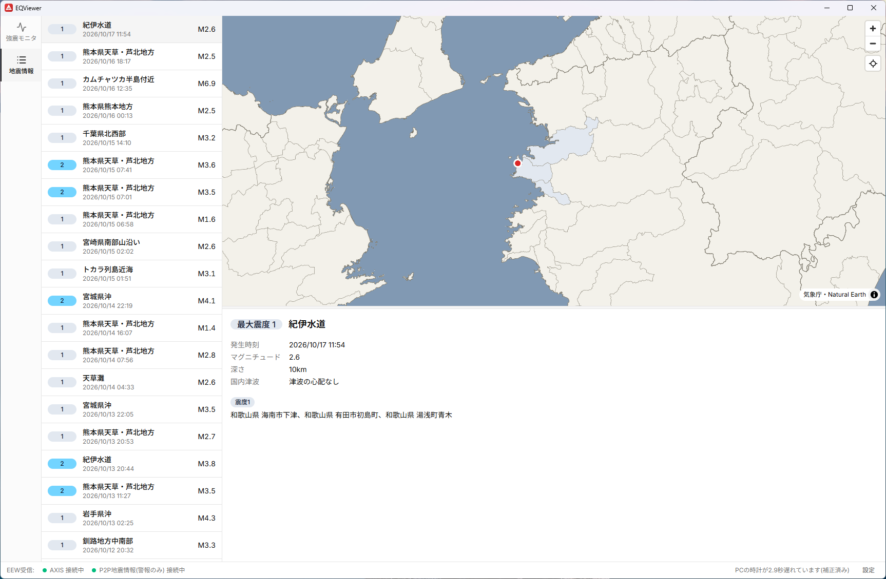

EQViewer
緊急地震速報・地震履歴・強震モニタのリアルタイム震度を、ひとつの画面で確認できる地震情報アプリです。
最新版は Releases から入手できます。
非公式の参考表示です。表示する緊急地震速報は、配信元から受け取った情報をそのまま見せるもので、公式の警報ではありません。安全に関わる判断には、気象庁・自治体などの公式の情報を使ってください。
画面


機能
- 緊急地震速報(EEW)震源・マグニチュード・最大震度・警報/予報を表示し、地図にP波・S波の到達予想円を描きます。新しい速報で通知と受信音を鳴らし、警報ではウィンドウを前面に出せます。
- 自宅地点への到達予測設定した緯度経度に、S波が届くまでの残り時間を表示します。
- 地震履歴一覧と、震度分布の地図つきの詳細。震度速報(地域単位)と、震源・震度に関する情報(市町村単位)に対応します。
- 強震モニタ全国約1,600点の観測点のリアルタイム震度を地図に表示します。
- 時計の補正NICTのNTPサーバーでPCの時計ずれを補正し、到達円や経過秒に使います。
- バックグラウンド動作ウィンドウを閉じてもトレイに常駐して受信を続けます(設定で変更できます)。
インストール
署名はしていないため、初回は次の操作が必要です。
- 上のボタンから、Windows 用のインストーラ(
.exe)または macOS 用のディスクイメージ(.dmg)をダウンロードします。 - Windows: SmartScreen の警告が出たら「詳細情報」→「実行」を選びます。
- macOS: 初回は右クリック→「開く」を選びます(または システム設定 → プライバシーとセキュリティ で許可します)。
情報源
| 緊急地震速報 | wolfx WebSocket API / P2P地震情報 WebSocket API(警報のみ) / AXIS API |
|---|---|
| 地震履歴 | P2P地震情報 / 気象庁防災情報XML(PULL型) |
| リアルタイム震度 | 強震モニタ(防災科研) |
| 地図 | 気象庁・国土数値情報(国内) / Natural Earth(国外) |
各情報源の利用条件に従ってください。